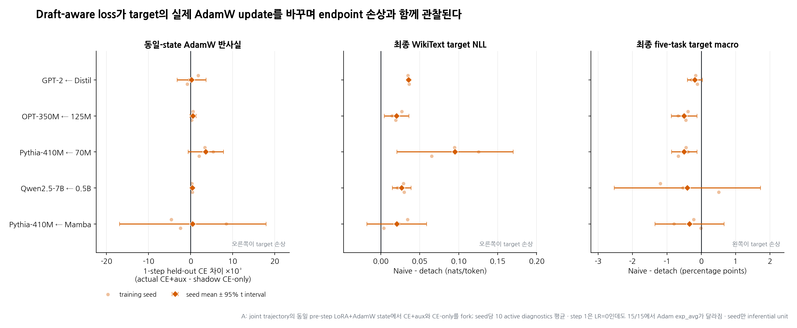

독립 pretrained target–drafter 공동학습의 target-update interference¶
축약 종합 보고서 · 2026-07-15
범위: parameter, embedding, hidden state, LM head, adapter, optimizer를 전혀 공유하지 않는 두 pretrained autoregressive language model
상태: 짧은 LoRA adaptation에서 얻은 controlled evidence이며 peer-reviewed 결과가 아님
0. 결론¶
본 연구의 모티베이션은 다음 한 문장이다.
독립 draft model의 acceptance-oriented loss를 target CE와 함께 target에 미분하면, 별도로 계산된 target CE gradient에 auxiliary gradient가 더해져 실제 target update와 AdamW state를 deflect하고 target 품질을 낮출 수 있다.
이를 편의상 target-gradient contamination이라 부르되, g_CE 자체가 수치적으로
변조된다는 뜻은 아니다. 코드에서는 g_CE와 g_aux를 별도 autograd.grad로
계산한다. 오염되는 것은 실제 적용 방향
및 그 방향을 누적하는 optimizer state다.
핵심 결과는 세 층으로 나뉜다.
- 직접 동일-state AdamW 반사실: 5 pair × 3 seed의 새 15-run panel에서
실제
CE+auxstep과 같은 pre-step parameter·AdamW state의CE-onlyshadow step을 비교했다. Auxiliary의 held-out CE 일차 효과는 active diagnostic 139/150회 불리했다. 실제 one-step held-out CE 차이는 85/150회 불리했고, seed 안에서 평균하면 11/15 seed와 5/5 pair 평균이 양수였다. 일차 근사와 exact contrast의 차이를 만드는 곡률·clipping·AdamW 등의 상대 기여는 분해하지 않았다. - 최종 target 품질: 기존 matched
naive − detachtarget NLL은 5/5 pair, 21/21 training seed에서 악화했다. 사전 고정 full five-task macro는 19/21 seed와 5/5 pair 평균에서 하락했다. - 경계: foundation-model collapse는 아니었다. 모든 naive target은 pretrained initial보다 WikiText NLL이 좋아졌고 기존 231 diagnostic에서 target CE의 일차 descent 방향이 완전히 뒤집힌 경우는 0회였다. 현상은 항상 같은 크기로 나타나는 법칙이 아니라 반복적인 target-update interference와 broader negative transfer다.

그림 1. 왼쪽은 joint trajectory의 같은 pre-step LoRA parameter와 AdamW state에서
실제 CE+aux update와 CE-only shadow update를 fork한 뒤 측정한 held-out CE 차이다.
가운데와 오른쪽은 같은 세 seed의 기존 matched endpoint다. 연한 점은 training seed,
진한 점과 선은 seed 평균과 descriptive 95% Student-t interval이다. Diagnostic step은
replicate가 아니며, inference unit은 training seed뿐이다.
1. 연구 범위와 문헌 gap¶
1.1 포함하는 설정¶
Target distribution을 p_θ, 독립 drafter를 q_φ라 한다. 둘은 tokenizer-compatible
token ID만 공유한다. Target과 draft의 backbone, representation, LM head, LoRA,
optimizer는 모두 분리되어 있다.
비교는 다음과 같다.
같은 seed의 두 arm은 minibatch 순서, optimizer, learning-rate schedule, token exposure,
draft update rule/coefficient를 맞췄다. 유일하게 직접 조작한 것은 target-side L_A
gradient의 적용 여부다. 이후 target trajectory 차이가 유도하는 draft co-adaptation까지
endpoint total effect에 포함된다.
1.2 제외하는 설정¶
MEDUSA/EAGLE형 shared/native-head 모델은 이 보고서의 실험 범위 밖이다. 해당 historical 실험은 저장소에 provenance로만 남아 있으며 본 결론의 근거로 섞지 않는다.
또한 target-side acceptance loss는 exact speculative decoding의 요건이 아니다. Speculative Decoding은 고정 target의 분포를 보존하고, DistillSpec, Online Speculative Decoding, Direct Alignment/TVD++ 같은 standalone-AR 계열도 주로 target을 teacher로 두고 draft를 맞춘다.
본 연구는 LK Losses v2의 direct-acceptance
Hybrid LK loss를 target에도 미분하는 experimental bidirectional extension을
시험한다. 조사 범위에서 독립 pretrained AR pair × bidirectional acceptance loss ×
target-gradient/optimizer 직접 분석은 충분히 다뤄지지 않았다. 이는 검색 범위의
gap이지 절대적 최초성 주장은 아니다.
2. Loss와 locked design¶
2.1 Hybrid LK objective¶
Confirmatory schedule은 η=3이다. Target-side β=1은 본 연구의 실험 계수이며
고정-target LK recipe의 일부가 아니다. Target CE/NLL은 각 target의 native LM head
전체에서 계산하고, target–draft alignment만 tokenizer-assigned 공통 ID support에서
계산했다.
2.2 Model matrix¶
| Target | Independent drafter | 관계 | endpoint seeds |
|---|---|---|---|
| GPT-2 | DistilGPT-2 | same-family Transformer | 5 |
| OPT-350M | OPT-125M | same-family Transformer | 5 |
| Pythia-410M | Pythia-70M | same-family Transformer | 5 |
| Qwen2.5-7B | Qwen2.5-0.5B | 7B scale | 3 |
| Pythia-410M | Mamba-130M | Transformer–SSM cross architecture | 3 |
모든 모델은 pinned pretrained checkpoint에서 시작했다. Base weight는 고정하고 rank-8 LoRA만 학습했다.
2.3 공통 조건¶
- WikiText-103, 100 optimizer steps, batch 4, sequence length 64
- 실제 input-token exposure: run당 25,600
- Target/draft 별도 AdamW, LR
2e-4, warmup 10, cosine schedule, clip0.5 - BF16 training; target-only downstream과 exact rollout은 FP32 reference
- Confirmatory endpoint panel: detach, naive
β=1, pure target norm capρ=0.1 - Training seed만 inferential unit; step, token, task, prompt, sampling seed는 replicate가 아님
3. 새 직접 실험: 동일-state shadow AdamW fork¶
3.1 질문¶
기존 cosine은 g_CE와 g_aux의 순간 각도만 보여준다. 사용자의 핵심 가설을 더
직접 확인하기 위해 같은 pre-step state에서 실제 optimizer update를 fork했다.
각 diagnostic step에서 실제 branch는
shadow branch는
를 적용한다. 여기서 S는 동일한 pre-step AdamW state다. Shadow parameter와 optimizer는
복사본이며 실제 trajectory를 바꾸지 않는다.
아래에서 Δ_full=θ⁺−θ, Δ_CE=θ⁺_CE−θ로 둔다.
Held-out WikiText-2 batch에서 primary local contrast를
로 정의했다. H_val>0이면 그 step의 auxiliary가 CE-only 반사실보다 held-out target CE를
악화시킨다. Gradient-level contrast g_val^T(Δ_full−Δ_CE)도 함께 기록했다.
3.2 Panel과 완전성¶
- 5 pair × seed
{0,1,2}× naiveβ=1= 15 runs - 100 steps/run = 1,500 actual optimizer steps
- step
{1,10,…,100}= 165 shadow diagnostics - warmup으로 parameter가 실제 이동하는 active diagnostics = 150
- 15개 새 run의 raw final target NLL은 원래 naive run과 15/15 정확히 일치
(joined CSV의 최대
4.44×10⁻¹⁶은 decimal roundtrip 차이) - 분석기 v2는 pinned revision·LR·warmup·clip·LoRA·corpus fingerprint까지 lock하고, 15 run, 165 diagnostics, endpoint 15개를 one-to-one으로 확인하며 불완전 panel이나 기존 output overwrite를 거부
3.3 직접 결과¶
| Pair | H_val ×10³ nats/token, seed mean [95% t interval] |
양수 seed | active-step exact harm rate |
|---|---|---|---|
| GPT-2 ← Distil | +0.254 [−3.177, +3.685] | 1/3 | 14/30 |
| OPT-350M ← 125M | +0.575 [−0.147, +1.297] | 3/3 | 20/30 |
| Pythia-410M ← 70M | +3.615 [−0.566, +7.795] | 3/3 | 19/30 |
| Qwen2.5-7B ← 0.5B | +0.444 [+0.129, +0.759] | 3/3 | 17/30 |
| Pythia-410M ← Mamba | +0.519 [−16.868, +17.906] | 1/3 | 15/30 |
다섯 pair의 point estimate는 모두 양수였지만 n=3 interval이 0을 배제한 것은 Qwen
하나뿐이다. 전체 active diagnostic에서 exact held-out CE가 나빠진 step은 85/150,
same-batch CE는 87/150이었다. 이 step 수는 repeated measurement이므로 통계 표본으로
세지 않는다.
반면 local linear approximation은 더 일관됐다.
- Held-out
g_val^T(Δ_full−Δ_CE)>0: 139/150 active diagnostics - Training
g_CE^T(Δ_full−Δ_CE)>0: 148/150 - Held-out
g_val^Tg_aux<0: 140/165 gradient diagnostics - Training
g_CE^Tg_aux<0: 122/165
즉 auxiliary는 대개 target CE의 일차 descent를 상쇄했다. 그러나 실제 finite AdamW step의 exact CE sign은 자주 달랐다. 곡률, clipping, adaptive moments는 가능한 contributor이지만 본 panel은 각각을 분리 추정하지 않았다. “negative cosine이면 매 step loss가 반드시 오른다”는 설명은 자료가 지지하지 않는다.
더 직접적인 optimizer-state 증거도 있다. Step 1은 warmup 때문에 target LR이 0이고
두 branch 모두 parameter update norm이 0이다. 그런데 CE+aux와 CE-only의 Adam
exp_avg는 15/15 run에서 이미 달라졌다. 차이 norm은 actual moment norm의
평균 23.1%, run 범위 12.0–42.1%였다. Target parameter가 움직이기 전부터 auxiliary가
후속 update state를 바꾼 것이다.
중요한 한계가 있다. Shadow fork는 joint trajectory에 이미 누적된 S에서 현재
한 step만 CE-only로 바꾼다. 처음부터 끝까지 별도 CE-only trajectory를 만드는
mediation decomposition은 아니다. 그 누적 효과의 causal estimand는 다음 절의
same-seed naive−detach endpoint다.
4. 최종 target 성능¶
4.1 WikiText target NLL¶
| Pair | naive − detach | norm cap − detach |
|---|---|---|
| GPT-2 ← Distil | +0.03444 | +0.00827 |
| OPT-350M ← 125M | +0.01968 | +0.00300 |
| Pythia-410M ← 70M | +0.09055 | −0.00132 |
| Qwen2.5-7B ← 0.5B | +0.02696 | +0.00312 |
| Pythia-410M ← Mamba | +0.02066 | −0.00770 |
Naive는 5/5 pair 평균과 21/21 seed에서 target NLL을 악화시켰다. 하지만 모든 naive target은 pretrained initial보다 WikiText NLL이 좋아졌다. 따라서 정확한 표현은 “model collapse”가 아니라 “detach였다면 얻을 target adaptation의 일부 손실”이다.
4.2 Full target-only downstream panel¶
Draft를 전혀 로드하지 않고 target adapter만 FP32로 평가했다.
- 63 target adapters + 4 fixed adapter-disabled pretrained targets
- HellaSwag, PIQA, ARC-Easy, ARC-Challenge, WinoGrande full validation
- 14,016 examples/checkpoint, 총 939,072 checkpoint-example rows
- Primary four-family macro:

그림 2. Full target-only macro의 condition−detach contrast. 연한 점은 training seed, 진한 점과 whisker는 pair별 평균과 descriptive 95% t interval이다. Pair를 하나의 architecture population처럼 pooling하지 않았다.
| Pair | naive − detach, pp [95% t interval] | 음수 seed | cap − detach, pp |
|---|---|---|---|
| GPT-2 ← Distil | −0.163 [−0.320, −0.007] | 4/5 | −0.057 |
| OPT-350M ← 125M | −0.351 [−0.649, −0.054] | 5/5 | −0.176 |
| Pythia-410M ← 70M | −0.564 [−0.739, −0.389] | 5/5 | −0.103 |
| Qwen2.5-7B ← 0.5B | −0.403 [−2.534, +1.728] | 2/3 | −0.028 |
| Pythia-410M ← Mamba | −0.338 [−1.345, +0.669] | 3/3 | +0.298 |
Naive macro는 19/21 seed와 5/5 pair 평균에서 하락했다. Pythia–Pythia만
exploratory engineering margin −0.5 pp를 넘었다. 이 margin은 유의성 기준이 아니다.
Qwen seed 2 +0.512 pp, GPT seed 3 +0.017 pp처럼 반대 부호도 있었다.
Naive adapter 21/21은 fixed pretrained base보다 macro가 낮았다. 하지만 detach도
15/21 seed와 4/5 pair 평균에서 base 아래였다. Fixed base는 training-seed replicate나
causal control이 아니다. Target-side auxiliary의 causal estimand는 같은 seed의
naive−detach다.
5. 해석과 완화¶
5.1 무엇이 확인됐는가¶
g_CE와g_aux는 독립적으로 계산되지만, 합성 update와 Adam moments는 달라진다.- Same-family pair에서는 local parallel conflict가 빈번했고 shadow probe도 주로 불리했다.
- Pythia–Mamba는 기존 naive CE retention이
1.032로 local CE를 돕는 방향이었는데도 최종 NLL과 macro가 나빠졌다. Parallel conflict는 endpoint harm의 필요조건이 아니다. - Orthogonal deflection, clipping, Adam state, target↔draft co-adaptation, validation generalization은 trajectory 결과를 설명할 수 있는 후보지만 본 실험은 상대 기여를 분리 추정하지 않았다.
- WikiText NLL이나 gold-choice likelihood가 좋아져도 broad choice accuracy는 떨어질 수 있다. 하나의 likelihood 지표를 target quality 전체로 대체하면 안 된다.
5.2 완화 결과¶
Target-priority cap
은 naive 대비 downstream macro를 17/21 seed와 5/5 pair 평균에서 회복했다. 하지만 cap−detach는 13/21 seed와 4/5 pair 평균에서 여전히 음수였다. 완화이지 무손실 보장은 아니다.
작은 same-family 3-pair panel에서 PCGrad는 negative parallel component를 제거했지만 endpoint NLL 보호는 cap보다 약했다. 같은 3-pair panel의 fixed pretrained-target KL anchor weight 1은 원하는 WikiText adaptation까지 막아 안전장치가 되지 못했다. Uncapped PCGrad와 anchor arm은 Qwen/Pythia–Mamba에서 실행하지 않았다.
권장 순서는 간단하다.
- 기본값은 target-side alignment detach.
- Bidirectional target update가 꼭 필요하면 auxiliary norm cap과 target-quality gate를 사용.
- PCGrad는 cap의 보조 수단으로만 고려.
- Target NLL/downstream과 exact acceptance를 별도 constraint로 관리.
- 새 방법은 same-state shadow fork와 same-seed detach endpoint를 모두 통과해야 함.
6. Acceptance와의 trade-off¶

그림 3. Target WikiText NLL과 FP32 exact rollout AAL. Cap은 target 손상을 줄이는 대신 acceptance gain도 대체로 줄였다. 이 그림은 condition endpoint 요약이며 seed-level 상관이나 production throughput 추정이 아니다.
Naive는 OPT/Pythia/Qwen/Pythia–Mamba에서 AAL point estimate를 높였지만 GPT에서는
teacher-forced overlap이 늘어도 전체 AAL이 변하지 않았다. Cap은 Pythia–Mamba의
AAL gain을 +0.171→+0.006, Qwen을 +0.090→+0.053으로 줄였다.
Pythia checkpoint cross-swap의 conditional AAL effect는 joint target만 넣을 때
+0.158, joint draft만 넣을 때 −0.076이었다. 이는 acceptance gain의 일부가
“draft 개선”보다 “target이 draft 쪽으로 이동”한 결과와 양립한다. Cross-swap은
off-diagonal checkpoint effect이며 diagonal joint effect의 유일한 additive causal
decomposition은 아니다.
Teacher-forced overlap은 actual acceptance length가 아니다. 모든 보고 rollout은 FP32 eager exact rejection sampling을 사용했고 speculative greedy output은 해당 target-only greedy output과 일치했다. Transparent latency는 production serving throughput이 아니다.
7. 주장 범위와 한계¶
본 자료가 지지하는 주장은 다음과 같다.
η=3, β=1Hybrid LK를 두 independent pretrained AR model에 bidirectionally 적용한 짧은 LoRA regime에서, target-side auxiliary는 target의 applied gradient와 AdamW state를 직접 바꾸며 same-seed detach 대비 target NLL과 broad downstream accuracy를 반복적으로 낮췄다.
지지하지 않는 주장은 다음과 같다.
- 모든 architecture, seed, task, domain에서 반드시 성능이 하락한다.
- Negative cosine 하나가 endpoint harm을 완전히 설명한다.
- Foundation pretraining부터 같은 크기의 현상이 발생한다.
- Fixed pretrained base와 naive의 전체 차이가 auxiliary loss의 causal effect다.
- Acceptance 향상이 곧 draft 자체의 품질 향상이나 serving speedup이다.
주요 한계:
- LoRA 100-step, 25.6K-token adaptation이며 full fine-tuning이나 scratch pretraining이 아님
- Pair당 seed가 3 또는 5로 작아 t interval은 descriptive
- Shadow fork는 joint optimizer history에서 현재 step만 바꾸며 cumulative mediation이 아님
- Downstream은 full validation이지만
add_special_tokens=False, native-logit policy라 표준 lm-eval wrapper/leaderboard parity를 주장하지 않음 - Rollout prompt와 generation 길이가 작고 FP32 transparent implementation은 serving engine이 아님
다음 우선순위는 (1) cumulative shadow trajectory 또는 dual target-quality constraint,
(2) cap ρ∈{0.025,0.05,0.1,0.2} sweep, (3) longer/full fine-tuning,
(4) instruction/code/multilingual target-quality panel이다.
8. 재현성과 산출물¶
핵심 코드:
train_standalone.pysrc/specdec_joint/train_standalone.py: 독립 gradient path, held-out gradient probe, shadow AdamW forkanalyze_target_gradient_shadow.pysrc/specdec_joint/analyze_target_gradient_shadow.py: 15-run/165-diagnostic fail-loud 분석과 endpoint joinanalyze_target_benchmarks.pysrc/specdec_joint/analyze_target_benchmarks.py: 63+4 target-only full benchmark 분석benchmark_standalone.pysrc/specdec_joint/benchmark_standalone.py: FP32 exact rolloutbuild_followup_figures.pyscripts/build_followup_figures.py: audited figure 생성
핵심 artifact:
- Shadow experiment manifest
artifacts/target_gradient_shadow_eta3_v1_analysis_v2/target_gradient_shadow_manifest.json - Shadow seed rows
artifacts/target_gradient_shadow_eta3_v1_analysis_v2/target_gradient_shadow_by_seed.csv - Full target benchmark manifest
artifacts/target_benchmark_suite_fp32_v1_analysis/target_benchmark_analysis_manifest.json - Figure manifest
figures/figure_manifest.json - Locked target benchmark protocol
TARGET_BENCHMARK_PROTOCOL.md
재현 명령:
# 새 shadow mechanism panel
ROOT=runs/target_gradient_shadow_eta3_rerun_v1 \
PAIRS="gpt2 opt pythia" SEEDS="0 1 2" \
CONDITIONS="beta1" STEPS=100 TRAIN_TOKENS=65536 EVAL_TOKENS=8192 \
WARMUP_STEPS=10 LK_ETA=3 PROJECT_TO_TOKENIZER_VOCAB=1 \
NORMALIZE_PAD_TO_EOS=0 \
HELDOUT_GRADIENT_PROBE=1 SHADOW_OPTIMIZER_PROBE=1 \
bash scripts/run_standalone_matrix.sh
ROOT=runs/target_gradient_shadow_eta3_rerun_v1 \
PAIRS="qwen7b pythia_mamba" SEEDS="0 1 2" \
CONDITIONS="beta1" STEPS=100 TRAIN_TOKENS=65536 EVAL_TOKENS=8192 \
WARMUP_STEPS=10 LK_ETA=3 PROJECT_TO_TOKENIZER_VOCAB=1 \
NORMALIZE_PAD_TO_EOS=1 \
HELDOUT_GRADIENT_PROBE=1 SHADOW_OPTIMIZER_PROBE=1 \
bash scripts/run_standalone_matrix.sh
python -m specdec_joint.analyze_target_gradient_shadow \
--runs runs/target_gradient_shadow_eta3_rerun_v1 \
--small-runs artifacts/standalone_lketa3_followup_v2/followup_runs.csv \
--scale-runs artifacts/standalone_scale_cross_eta3_v1/standalone_runs.csv \
--small-contrasts artifacts/standalone_lketa3_followup_v2/followup_seed_contrasts.csv \
--scale-contrasts artifacts/standalone_scale_cross_eta3_v1/standalone_paired_contrasts.csv \
--macro-contrasts artifacts/target_benchmark_suite_fp32_v1_analysis/target_benchmark_macro_seed_contrasts.csv \
--output-dir artifacts/target_gradient_shadow_eta3_reanalysis_v2
# 아래 figure builder는 repository의 authoritative analysis_v2를 읽는다.
# 새 re-analysis를 primary로 승격할 때 INPUTS 경로와 manifest를 함께 갱신한다.
python scripts/build_followup_figures.py --root . --output-dir figures
python scripts/build_public_report.py \
--source REPORT_FOLLOWUP_COMPREHENSIVE_KO.md \
--output public_report_site/index.html
CUDA 실행 전 원래 H100 host에서는 CONTEXT.md와 ENVIRONMENT.md의 driver-matched
LD_PRELOAD를 적용해야 한다. Completed root는 덮어쓰지 않으며, 새 분석은 새 versioned
output에만 쓴다. Model adapter weights는 Git에 저장하지 않고 raw histories, metrics,
analysis rows, manifests만 version한다.